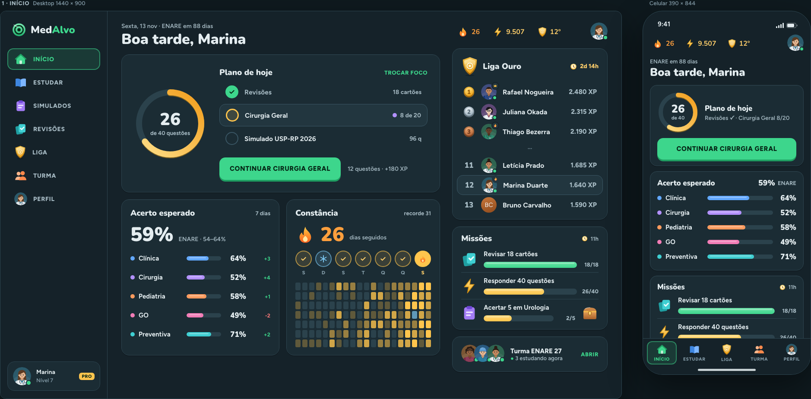
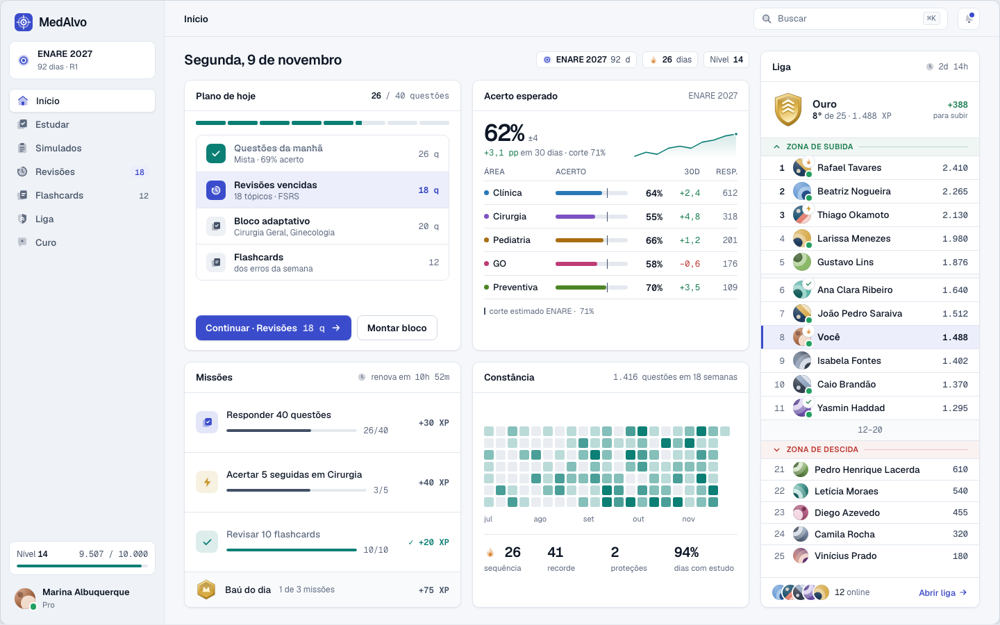
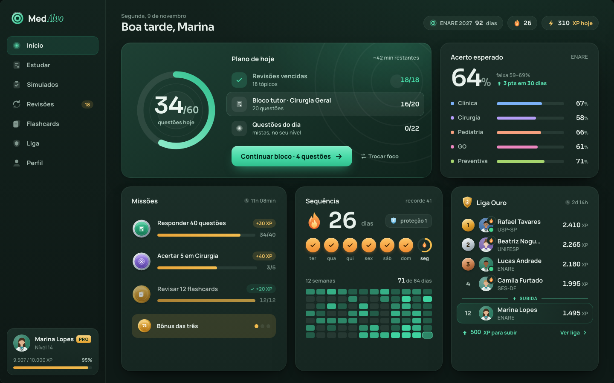

Qual destas você prefere?
Três propostas de visual para o MedAlvo, com as mesmas telas: início, liga, perfil de outro aluno e questão. Cada uma tem versão de computador e de celular, e um botão no topo troca entre o tema claro e o escuro.

Opção 1
Plantão
A mais "jogo", estilo Duolingo adulto: escuro azulado, escudos com volume, avatares ilustrados de jaleco.
Abrir →
Opção 2
Prontuário
A mais sóbria, cara de software médico profissional: neutros frios, dados bem organizados, gráficos finos.
Abrir →
Opção 3
Residência
Premium e acolhedora: verde-pinho profundo, cartões com profundidade, números grandes em destaque.
Abrir →